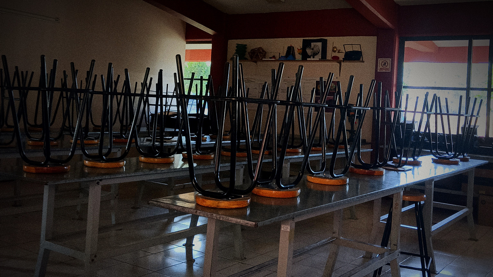
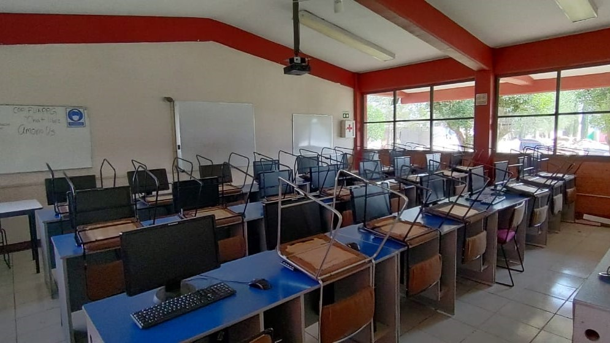

Características
Competencias profesionales
Verifica la seguridad e higiene en el ámbito laboral, Auxilia en la mejora de procesos prouctivos, Controla inventarios de producción, Inspecciona la calidad en la producción, Elabora proyectos de producción.
Competencias de empleabilidad y productividad
Trabajo en equipo. Adaptabilidad. Atención al cliente. Ética Profesional. Planeación y Organización. Comunicación Efectiva. Relaciones Interpersonales Atención al proceso Orientación a la mejora continua
Competencias Genericas
Se conoce y valora a sí mismo y aborda problemas y retos teniendo en cuenta los
objetivos que persigue.
Es sensible al arte y participa en la apreciación e interpretación de sus expresiones en
distintos géneros.
Elige y practica estilos de vida saludables.
Laboratorío

Contamos con dos laboratorios para las practicas realizada mediantes la carrera de
produccion
Contamos con dos laboratorios para las practicas realizada mediantes la carrera de
produccion
En el primero se realizan las practicas ocupando herramienta basicas (como dearmador, pinzas, entre
otras cosas).
En esta aula generalmente trabajan los alumnos de produccion industrial y mantenimiento de computo, teniendo las herramientas necesarias para poder realizar sus actividades como (como dearmador, pinzas, entre otras cossas), tambien manejan equipos de computo descompuestos o por armar.
Materias semestrales
Primero
- Álgebra
- Inglés I
- Química I
- Tecnologias de la información y la comunicación
- Lógica
- Lectura, Expresión oral y Escrita I
- Acercamiento a la lectura I
- Tutorías
Segundo
- Geometría y Trigonometría
- Inglés II
- Química II
- Lectura, Expresión oral y Escrita II
- Verifica la seguridad e higiene en el ámbito laboral
- Comprensión de textos II
- Tutorías
Tercero
- Geometría analítica
- Inglés III
- Biología
- Ética
- Auxilia en la mejora de procesos productivos
- Tutorías
- Comprensión de textos III
Cuarto
- Cálculo diferencial
- Inglés IV
- Física I
- Ecología
- Controla inventarios de producción industrial
- Producción de trabajos IV
- Tutorías
Quinto
- Cálculo Integral
- Inglés V
- Ciencia, Tecnologia, Sociedad y Valores
- Inspecciona la calidad en la producción industrial
- Producción de trabajos V
- Tutorías
Sexto
- Probabilidad y Estadística
- Filosofía
- Asignatura Propedéutica
- Asignatura Propedéutica
- Elabora proyectos de producción industrial
- Tutorías
Apartir de sexto semestre al alumno se le agregaran dos materias mas, llamadas propedeuticos.
Mas informacion
Comentarios

"Es una carrera con muchas oportunidades en el ambito laboral ya que todo lo que se aborda se emplea en la mayoria de trabajos de la vida cotidiana"
- Angel Gabriel JG.
"Esta carrera se me hizo muy interesante, es divertido aprender mientras estas con tus amigos y mas con una carrera que te gusta, se los recomiendo."
-Abraham Moreno Garrido.